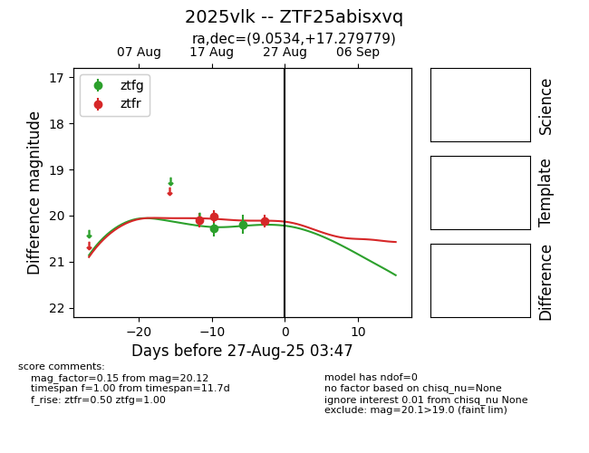

Target 2025vlk at 2025-08-27 09:42, see:
FINK: fink-portal.org/ZTF25abisxvq
Lasair: lasair-ztf.lsst.ac.uk/objects/ZTF25abisxvq
ALeRCE: alerce.online/object/ZTF25abisxvq
TNS: wis-tns.org/object/2025vlk
YSE: ziggy.ucolick.org/yse/transient_detail/2025vlk
alt names
ZTF25abisxvq (ztf,fink)
2025vlk (tns,yse)
coordinates:
equatorial (ra, dec) = (9.0534,+17.27978)
galactic (l, b) = (117.7492,-45.43871)
photometry
last ztfg=20.19, ztfr=20.40
2 ztfg, 4 ztfr detections
